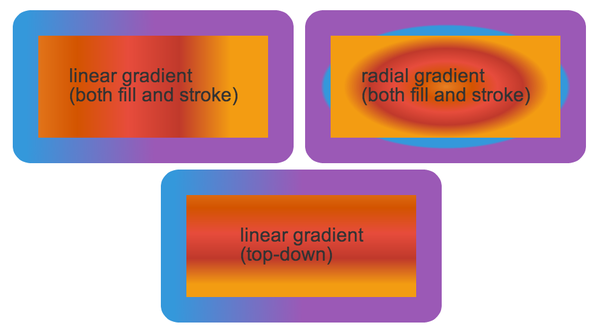

JointJS 0.8 Released Jan 22nd, 2014
January is getting to an end and it's not hard to find blossom trees here in Amsterdam. Strange configuration. To make things even warmer, we are happy to announce a new release of the library, JointJS 0.8.
Many thanks go to the entire community, JointJS developers, contributors, clients and all the others that showed us support and brought in their suggestions. Thank you!
With the new release, we are bringing new cool features, stability, better touch support, better documentation and other improvements and are further evolving into a truly comprehensive and modern diagramming and graph UI framework for the web platform.
New features
Filters
With filters, JointJS elements can get a bit fancier again. JointJS has a built-in support for all
the usual filters: blur, brightness, contrast, dropShadow, grayscale, hueRotate, invert, saturate
and sepia. These filters can be applied on any element or link (or any of their sub-elements).
If non of the predefined filters is your taste, you can easily write your own and extend
the built-in list.
Read more about filters in the tutorial.
Gradients
Do you find plain fill and stroke colors boring? No problem, JointJS has now a facility to
easilly set both linear and radial gradients as fill and stroke on all the graphic elements.

More on gradients in the tutorial.
Elements with Ports
It was always a little bit unpleasent to work with elements with ports in JointJS. Not anymore!
We have greatly improved handling of elements with ports, linking between ports and linking restrictions
that you can freely configure.
Tutorial on working with ports is here.
Better documentation
We are working hard on making JointJS documentation better. We have created New tutorials that you can find in the left menu in the tutorials page. We also made the API reference more complete and documented Utility functions that were up until now hidden in the JointJS library. A lot of useful information can also be found as usual in our community forum and some on StackOverflow. For our beloved commercial clients, we have recently launched an online documentation to the Rappid diagramming toolkit.
Go grab it!
You can pick up the JointJS code from the Download page. Watch our repository on GitHub or file bugs in the GitHub issue tracker. Follow us on Twitter.
Thanks and Enjoy!